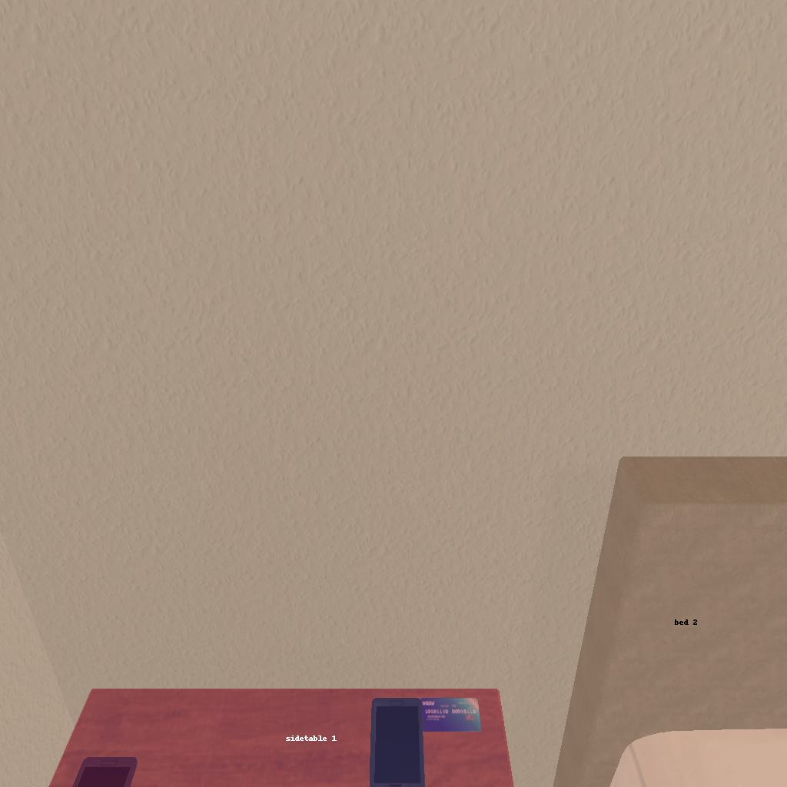

---------------------------------------------------------task: 6---------------------------------------------------------
--------------------------------------------------------------------------------------------------------------------------------------------------------------------
--------------------------------------------------------------------------------------------------------------------------------------------------------------------
Step:--------------------------------------------------------------------------0-------------------------------------------------------------------------------
----------------------------------------
VLM Prompt:
Image1:
**Instruction**
1. Analyze the provided image to identify all visible household objects, focusing on those relevant to the task description "put a cd in safe."
2. Use the analysis of the image and the task hint "The agent must find an object of the desired type, pick it up, find the correct location to place it, and put it down there." to answer the question: what is the most reasonable action in the choices for the task description "put a cd in safe"?
4. Decide and write the answer using the template: The answer is: (i): , where i is the real number. If there is no desired object in the image, search every place based on **Initial Observation** to find the object. And if no one is exactly correct, choose a similar answer.
**Initial Observation**
You are in the middle of a room. Looking quickly around you, you can see bed (1-2), dresser (1), sidetable (1-2), drawer (1-11), desk (1), garbagecan (1), safe (1)
**Answer Choices**
(1): go to bed 1
(2): go to dresser 1
(3): go to bed 2
(4): go to sidetable 1
(5): go to drawer 1
(6): go to drawer 2
(7): go to sidetable 2
(8): go to drawer 3
(9): go to drawer 4
(10): go to desk 1
(11): go to garbagecan 1
(12): go to drawer 5
(13): go to drawer 6
(14): go to drawer 7
(15): go to drawer 8
(16): go to drawer 9
(17): go to drawer 10
(18): go to drawer 11
(19): go to safe 1
**Answer**
Let's think step by step by following the instructions.
----------------------------------------
----------------------------------------
Original Response:
The task is to "put a cd in safe." The image shows a sidetable and a part of a bed. There is no CD visible on the sidetable or the bed. Based on the **Initial Observation**, there is a safe in the room, which is the final location to place the CD, but first, we need to find the CD.
CDs are usually stored in drawers or on a desk. Thus, we should check these locations first. Starting with the closest and most logical options:
- Drawers are common storage places for CDs, so we should start by searching there.
- The desk is another place where one might keep a CD, especially if it's related to work or study.
Since the image doesn't provide enough information about where the CD might be and no CD is visible, we should search every place based on **Initial Observation**.
The most reasonable action to start with would be to go to the desk, as it's a common place to keep CDs that are frequently used or needed at hand.
The answer is: (10): go to desk 1
----------------------------------------
----------------------------------------
>>> Refine Original VLM Response and Get Pure Action: go to desk 1
----------------------------------------
-----------------------------------------------------------------
Running time: 11.10378646850586 seconds
Total Money: 1.6191600000000004
-----------------------------------------------------------------
-----------------------------------------------------------------
Text Observation:You arrive at loc 9. On the desk 1, you see a alarmclock 1, a bowl 1, a mug 1, a keychain 1, and a pencil 1.
-----------------------------------------------------------------
UNSUCCEED